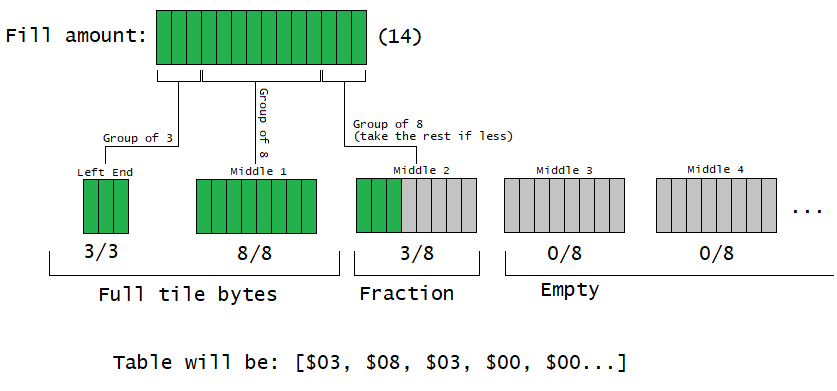
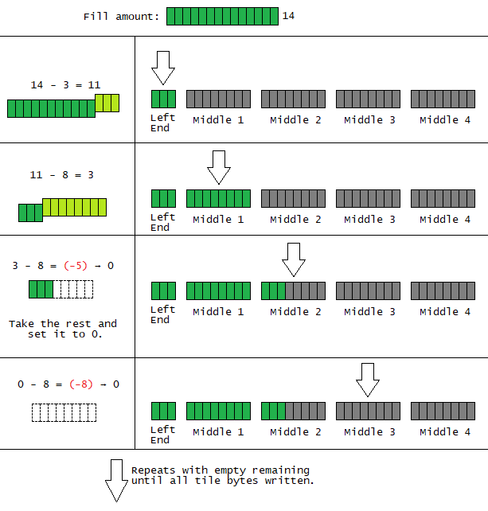
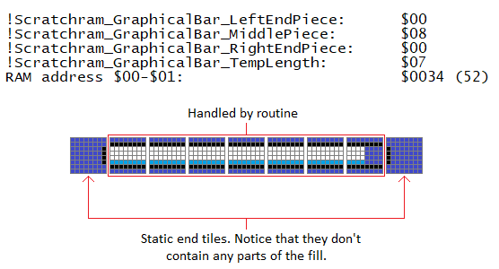
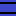
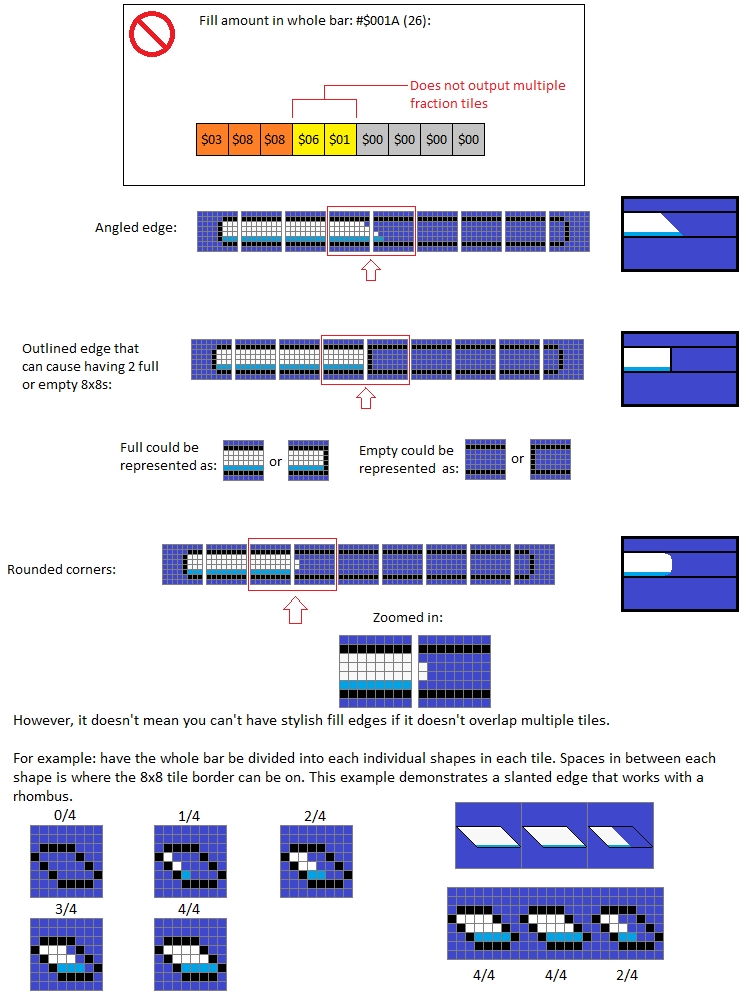
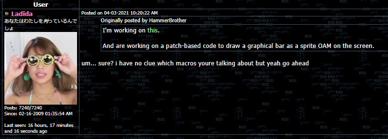

Graphical Bar ELITE
By GreenHammerBro
See github.
Introduction
This is a guide on how to setup a display of a value of something as a graphical bar (or progress bar) that you see in many games. Unlike some hacks like
SMWCP2 and brutal Mario (both as health bars), which are 1-unit (or piece) per tile being displayed, this package contains code to display multiple units
per tile (8 units normally), as well as representing a ratio of something with any number (1-65535) as the max. This means that this can have more accurate
representation of a value (say it approximate to the nearest pixel instead of 8x8 tile) as a percentage and have any maximum amount without affecting the
length of the bar.
Notes
- This HTML uses ASCII art to represent something, so make sure you have your browser setting for fixed-width font such as
“Consolas” so it displays properly.
- You must have at least some ASM knowledge. See this ASM tutorial here.
Quick jumps:
The resources you need
Stuff you MAY need
Recommended resources
- Super Status Bar patch, SMW's status bar (or, heads-up display (HUD)) space is really small.
- Overworld Border plus, required if you want to display a graphical bar on the overworld border
(i.e UberasmTool_ExampleUsage/Gamemode0E_OWBorderTest.asm)
Javascript tools
^Installation (test run)
- First make any necessary changes to the defines in GraphicalBarDefines. Assuming you testing this out on a clean ROM with nothing
else besides LM making modifications, it is likely you don't have to edit anything. However, if you're planning to use the Super Status Bar patch, open
StatusBarSettings.asm and change !StatusBarFormat to $02 and !StatusBar_UsingCustomProperties
to 1 so that it displays properly.
- Don't forget, if you want to display a graphical bar on the overworld, you need to install the Overworld Border Plus patch (using the vanilla OWB is very difficult
to modify, and that codes here only supports the OWB+ patch). Remember that this have the same tile data format as the super status bar patch, don't worry about
!StatusBarFormat (this only influences the status bar-related code and not the border) as the routines support hybrid tile formats (you can have status
bar's “each next tile is next byte” format and OWB+'s “each next tile is next 2 bytes over, provided you have set !OWPlusAndSSBSameFormat to 0).
- Another thing to note is the define !StatusBar_UsingCustomProperties, this applies to both the status bar and the overworld border plus patch. This is because both
writes to the status bar and the border reuses the same “write tile” routine to save space. Thankfully, most status bar patches that are layer 3-based,
regardless of the formats, will likely enable you to edit their tile properties, so its more likely you have to set this define to 1 (its 0 by default).
- Now paste the folders:
- GraphicalBarDefines (the folder itself) → Uberasm tool's main directory (same area as the .exe)
- GraphicalBarELITE.asm → Uberasm tool's library.
- Inside the folder UberasmTool_ExampleUsage, they go to their respective locations based on their filename.
- Open uberasm tool's list.txt, and paste these so that the codes get inserted:
; Level list. Valid values: 000-1FF.
level:
104 Level_DoubleBar.asm
105 Level_Simple.asm
106 Level_RoundAwayFromComplete.asm
;[...]
gamemode:
; Insert files here
;0E Gamemode0E_OWBorderTest.asm ;>Need OWB+ patch to function! |
- Insert the graphics by:
- Create the “ExGraphics” if you haven't done so by clicking on the blue mushroom in Lunar Magic.
- Paste the graphic bin files (from this package's “ExGraphics” folder) of your choice (If you want “TransperentBackground”
() or “BlackBackground” ())
into the other where your game resides. Then, take out the appended characters after the “ExGFX<number>” but before the “.bin”.
Note: If you're using the minimalistic status bar patch, I recommend using “BlackBackground” to be able to see the entire bar (including a part that is empty); since
the outlines on “TransperentBackground” would camouflage and you only see the fill amount, unless you change the minimalistic status bar patch's background color.
This readme assumes you're using “TransperentBackground”.
- Now in your level editor, click on the green poision mushroom to open a dialog about Layer 3 GFX bypass. On LG1, set that
to use the graphic files (obviously the bin files are conveniently named to tell you what slot uses what file). Level 105
and 106 LG1s to be slot 80, but for 104, it needs LG1 to be slot 81 and LG2 to be slot 82 to accommodate the large number of
tiles. Then hit OK and save to apply the changes.
- Now you are done, although there are more example codes than provided here, given that you can play up to 3 levels from the get-go without beating them and without editing the overworld. If you want to test
thats not listed here, read the info in their comments at the top inside of them, the filenames should be obvious on where to insert (and don't forget to edit the list again). The examples follows:
- Level 104 (Yoshi's house) is a double-bar, which can display two “fills” overlapping each other (). Press and hold right, then
press and hold up to see. If you're using the Super Status Bar patch (and have modified the defines so that the code adopts to it), it will display 4 hex numbers at the top right, displaying the first column the amount and fill-percentage amount of FirstFill
and the other column for SecondFill.
- Level 105 (Yoshi's island 1) is a progress meter, keep heading right to see it fills up.
- Level 106 (Yoshi's island 2) is a coin meter, once 99 is reached, it should be full. It also avoids displaying 0% if if not 0 coins and 100% less than 99 coins,
a failsafe measure to avoid misleading value displays.
- On the overworld border, measures Mario's Bonus Stars (does not measure Luigi's if 2-player mode).
If you're not using the Super Status Bar patch, the bar will be displayed over the word “TIME” and the coin symbol. The palette will be yellow on some areas,
but thats intentional as SMW's status bar is very limited.
^Displaying your own value as a graphical bar (Uberasm tool, Layer 3)
Perhaps if you want to display something other than the provided examples above, here are the templates:
- A simple graphical bar.
incsrc "../GraphicalBarDefines/GraphicalBarDefines.asm"
incsrc "../GraphicalBarDefines/StatusBarSettings.asm"
;^These are needed so the defines relating to the graphical bars work.
main: ;>You DO need this if using uberasm tool.
.InputRatio
LDA $0DBF|!addr ;\Quantity low byte (example: current HP). Use RAM here.
STA !Scratchram_GraphicalBar_FillByteTbl ;/
LDA #$00 ;\High byte of above. Should your value here is 8-bit or only 1 byte long,
STA !Scratchram_GraphicalBar_FillByteTbl+1 ;/use [LDA #$00 : STA !Scratchram_GraphicalBar_FillByteTbl+1].
LDA #$63 ;\Max quantity low byte (example: max HP). Can be a fixed value (#$) or adjustable RAM in-game.
STA !Scratchram_GraphicalBar_FillByteTbl+2 ;/
LDA #$00 ;\High byte of above, same format as <Value_high_byte>, so do the same
STA !Scratchram_GraphicalBar_FillByteTbl+3 ;/as that if your value is 8-bit.
.InputGraphicalBarAttributes
LDA.b #!Default_LeftPieces ;\Left end normally have 3 pieces.
STA !Scratchram_GraphicalBar_LeftEndPiece ;/
LDA.b #!Default_MiddlePieces ;\Number of pieces in each middle byte/8x8 tile
STA !Scratchram_GraphicalBar_MiddlePiece ;/
LDA.b #!Default_RightPieces ;\Right end
STA !Scratchram_GraphicalBar_RightEndPiece ;/
LDA.b #!Default_MiddleLength ;\length (number of middle tiles)
STA !Scratchram_GraphicalBar_TempLength ;/
.ConvertToBar
JSL GraphicalBarELITE_CalculateGraphicalBarPercentage ;>Get percentage
JSL GraphicalBarELITE_RoundAwayEmptyFull
JSL GraphicalBarELITE_DrawGraphicalBar ;>get bar values.
STZ $00 ;>Use Level-layer3 tileset
JSL GraphicalBarConvertToTile_ConvertBarFillAmountToTiles ;>Convert tiles.
LDA.b #!Default_GraphicalBar_Pos_Tile ;\Setup address to where to draw the bar.
STA $00 ;|
LDA.b #!Default_GraphicalBar_Pos_Tile>>8 ;|
STA $01 ;|
LDA.b #!Default_GraphicalBar_Pos_Tile>>16 ;|
STA $02 ;/
if !StatusBar_UsingCustomProperties != 0
LDA.b #!Default_GraphicalBar_Pos_Properties ;\Same as above but properties
STA $03 ;|
LDA.b #!Default_GraphicalBar_Pos_Properties>>8 ;|
STA $04 ;|
LDA.b #!Default_GraphicalBar_Pos_Properties>>16 ;|
STA $05 ;/
if !Default_LeftwardsBar == 0
LDA.b #!Default_StatusBar_TilePropertiesSetting ;\Properties
else
LDA.b #(!Default_StatusBar_TilePropertiesSetting|(!Default_LeftwardsBar<<6))
endif
STA $06 ;/
endif
if !Default_LeftwardsBar == 0
if !StatusBarFormat = $01
JSL GraphicalBarWriteToStatusBar_WriteBarToHUD ;>Write to status bar
else
JSL GraphicalBarWriteToStatusBar_WriteBarToHUDFormat2 ;>Write to status bar
endif
else
if !StatusBarFormat = $01
JSL GraphicalBarWriteToStatusBar_WriteBarToHUDLeftwards
else
JSL GraphicalBarWriteToStatusBar_WriteBarToHUDLeftwardsFormat2
endif
endif
RTL |
Font colored in red is the things you change, while the green, you edit values in the defines via opening up
GraphicalBarDefines/StatusBarSettings.asm and changing those, and yes, you can safely redefine them when you have multiple bars for advanced use. Yellow
is the same as green, but it has to be a 3-byte (24-bit) address. Orange means you can remove the rounding away code if you want the bar to be able to round
towards empty or full. Of course, the # symbol means a fixed number instead of a RAM address.
Also if you are handling 16-bit mode quantity while on 8-bit accumulator, you write the 16-bit number #$1234 (a fixed value not stored in RAM) as
storing the #$34 onto the low byte and #$12 on the high byte (if it was RAM, it should be obvious, low byte written to low byte and high to high). Remember that
the SNES is little-endian when the number stored as bytes are adjacent from one another in memory.
- Double Bar. Displays 2 fills like this: , which is useful for displaying changes such as how much HP was lost. See
this information. The colored fonts last mentioned above code also applies on codes here as well.
^Drawing OAM (Normal sprites (SMW sprites or pixi), not cluster, extended, minor extended, etc.)
While this code library was originally meant to be used with layer 3 status bar on uberasm tool, I added a new feature that
would support sprite OAM.
What you need are:
- Pixi obviously.
-
Shared subroutines patch. I really hated the way how pixi's routines work: it functions the same as GPS (Gopher Popcorn Stew), meaning you
cannot have multiple subroutines in the same ASM file, they have to separate and that labels/sublabels inside those subroutines leak out (may even break if using ?.MacroSublabels). Plus, it is possible that hacks may have a graphical bar as both a sprite
and layer 3, so by having a shared subroutines patch, you don't need to have two copies one for sprite routines and for uberasm tool.
Insertion process (test sprite)
- ASM stuff
- Shared subroutines patch
- Before you use Shared Subroutines patch, read the readme and several comments in there! A simple mistake can cause issues.
- The routines in GraphicalBarELITE.asm, GraphicalBarConvertToTile.asm, GraphicalBarOtherRoutines.asm, and GraphicalBarWriteToOam.asm copy that (and only the subroutines, you CAN include the comments), paste it in a temporary blank
document, and check for any potential label conflicts (two identical labels to jump to) between that and the already-included routines in Shared Subroutines patch's subroutinecode.asm, if the are, then rename them. It is also possible
that routines in this package may already exist in the shared subroutines package, especially if you added even more subroutines, so one or the other copy of the subroutine can safely be omitted (but make sure the labels are right).
As of the time of writing this, I tested version 2.3 (added at 2019-04-18), the latest version, and no renaming labels was needed.
- Once those labels and duplicate routines are fixed, copy that into the shared subroutines's subroutinecode.asm.
-
Open SharedSubroutine's sharedsub.asm, goto where the incsrcs are at:
incsrc "SharedSub_Defines/OtherDefines.asm"
incsrc "SharedSub_Defines/SubroutineDefs.asm" |
Under it, add this:
incsrc "GraphicalBarDefines/GraphicalBarDefines.asm"
incsrc "GraphicalBarDefines/SpriteOAMSettings.asm" |
- Now copy the folder GraphicalBarDefines, and paste it in the main directory (not in any subfolders) of the shared subroutines folder (same area as sharedsub.asm)
-
In sharedsub.asm, add this to the subroutine list (preferably below all others),1:
; Graphical bar
autoclean JML CalculateGraphicalBarPercentage
autoclean JML RoundAwayEmpty
autoclean JML RoundAwayFull
autoclean JML RoundAwayEmptyFull
autoclean JML DrawGraphicalBar
autoclean JML DrawGraphicalBarSubtractionLoopEdition
autoclean JML ConvertBarFillAmountToTiles
autoclean JML ConvertBarFillAmountToTilesDoubleBar
autoclean JML ConvertBarFillAmountToTilesEdgeOverMultipleTiles
autoclean JML CountNumberOfTiles
autoclean JML DrawOamGraphicalBarHoriz
autoclean JML DrawOamGraphicalBarVert
autoclean JML DrawSpriteGraphicalBarHoriz
autoclean JML DrawSpriteGraphicalBarVert |
-
Do a similar thing, but for defines for SharedSub_Defines/SubroutineDefs.asm1:
; Graphical bar
%SetDefine(CalculateGraphicalBarPercentage)
%SetDefine(RoundAwayEmpty)
%SetDefine(RoundAwayFull)
%SetDefine(RoundAwayEmptyFull)
%SetDefine(DrawGraphicalBar)
%SetDefine(DrawGraphicalBarSubtractionLoopEdition)
%SetDefine(ConvertBarFillAmountToTiles)
%SetDefine(ConvertBarFillAmountToTilesDoubleBar)
%SetDefine(ConvertBarFillAmountToTilesEdgeOverMultipleTiles)
%SetDefine(CountNumberOfTiles)
%SetDefine(DrawOamGraphicalBarHoriz)
%SetDefine(DrawOamGraphicalBarVert)
%SetDefine(DrawSpriteGraphicalBarHoriz)
%SetDefine(DrawSpriteGraphicalBarVert) |
1If you renamed the labels, these have to be renamed so they match. Otherwise asar complains that labels not found.
- Now patch sharedsub.asm.
- Custom sprite
- In the Shared Subroutines folder, you'll want a copy of SharedSub_Defines AND GraphicalBarDefines folder in pixi's main directory (where the exe is at, not in any
subfolders).
- Same goes with GraphicalBarDefines folder. Have it just like above.
- Copy all the files inside Pixi_CustomSprite/GraphicalBarSimpleTest, paste it in pixi's sprites folder. Now use the .exe to insert into your game
- Graphics
- Go to ExGraphics/Sprite/GraphicalBarSimpleTest, copy one of those files (it depends if you want a horizontal bar or a vertical bar), paste it in your
ExGraphics folder. If you do not have them, press “Quick Extract ExGFX from ROM”, which is the blue mushroom to make the Exgraphics folder appear.
- And you are done. If you are planning to use this code within the custom sprite's code, continue doing the steps below.
Programming with existing custom sprites
Note: You must have some mid-level of knowledge of ASM, as here you must learn how to:
- Know which scratch RAM is currently used for other purpose during code execution, and be able to relocate them to another RAM should they conflict (2+ different data using the same address(es)) or use
the stack (PHA...PLA)
- Finding an appropriate place or rearranging to insert the code, due to certain values like indexes and scratch RAM are still being used for a specified purpose (for example: if scratch RAM is used for indirect addressing,
we don't want to put our code there, instead we place it at a location that is before scratch RAM becomes reserved for addressing).
Many sprites on the sprite section on SMWC can be complex and have different coding styles, but following the principals above should make it possible to implement on any sprite.
Another important note is that the routine %GetDrawInfo() uses a destroy-return-address. A stack-manipulation technique to “double-exit” the subroutine, consider this simple example shown below:
JSR Subroutine
STZ $00
RTL
Subroutine:
JSR InnerSubroutine
NOP ;\Just for demonstration purposes, it does nothing.
NOP ;|
NOP ;/
RTS
InnerSubroutine:
PLA ;\Pull 2 bytes out (the amount of bytes pushed when JSR'ing)
PLA ;/This destroys the return address to where the 3 NOPs are at in the stack.
RTS ;>Upon executing this, instead of going to where the 3 NOPs are at, it goes to the STZ $00 after "JSR Subroutine".
;What it executes, it performs in this order:
;(1) JSR Subroutine
;(2) JSR InnerSubroutine
;(3) PLA
;(4) PLA
;(5) RTS
;(6) STZ $00
;(7) RTL
;JSR pushes 2 bytes of address into the stack (more specifically, the next instruction's location, minus 1 into the stack)
;RTS pulls 2 bytes of address out of the stack (specifically, the location address in the stack. Takes that, add 1, and sets the program counter to jump there)
;The same applies to JSL and RTL, but 3 bytes instead.
|
Therefore, if you push something, you must pull before calling %GetDrawInfo() as the game will crash upon the sprite going offscreen (it will skip the essential pull that is after %GetDrawInfo()).
- Go to the graphics portion of the code (thankfully, they are conveniently named and 99.99% of the time use %GetDrawInfo()). You want to know these informations
- The total number of tiles it uses. Before calling the “finish OAM write” (done by calling JSL $01B7B3 or %FinishOAMWrite()), you'll need
to find out the total number of tiles, including the bar itself, and subtract by 1. One method to do so is by getting the total (sprite's body + graphical bar) first, and then subtract by 1, and avoid subtracting
by 1 for both the body and the graphical bar (you'll subtract by 2 which isn't what you want) therefore resulting (SpriteBodyTileCount + BarTileCount) - 1. Another method is by taking the number of
tiles on the sprite's body, minus 1, and then add by number of tiles of the bar ((SpriteBodyTileCount - 1) + BarTileCount), which also works.
- The tile sizes. Most sprites on SMWC are composed of 16x16 tiles, so you'll likely need to manually set the tile size
- If you happen to want a graphical bar on a sprite that is composed of at least 1 16x16 OAM tile (most sprites are like that, by the way), there is a good chance you'll have to
manually handle the size of editing $0460 in the sprite code (a mixture of 8x8s and 16x16, like the timed lift sprite (the platform itself is 2 16x16s and the number is a single 8x8.)):
;Manually set sprite tile size to 16x16 (this is for the main body of the sprite).
;Note: This may different depending on the sprite being used, for example, the Giant
;Masked Koopa Boss uses the X as the OAM index instead of Y because of indirect
;addressing opcode limitations (There is no [<Opcode> ($xx),x], and Y is
;used for its image state).
PHY ;>Push OAM index (You'll need this if you are still using the Y OAM index afterwards, especially if you are writing multiple tiles via a loop).
TYA ;\Convert index to OAM slot numbering
LSR #2 ;|
TAY ;/
LDA $0460|!addr,y ;\Manually set the size bit to 16x16
ORA.b #%00000010 ;|
STA $0460|!addr,y ;/
PLY ;>Restore OAM index
;[...]
;Finish OAM write:
LDY #$FF ;>The graphical bar tiles are always 8x8, but the sprite's body isn't always 8x8 or 16x16. Y=$FF means mixture
;A = total number of tiles to write, -1
<instruction to get the number of tiles, minus 1, into the A register>
<Either call using JSL $01B7B3, or use %FinishOAMWrite().> |
I've made another example test, using the Giant Masked Koopa boss. Please remember that this document only covers these sprites as examples
that will be similar to many other sprites, as their coding style are vastly different by 3rd party users that programmed their sprites on SMWC's sprite section.
I conveniently named the folders, so it shouldn't be difficult. The ASM and graphics are separated, however (graphics are in ExGraphics/Sprite/GiantMaskedKoopaTest). Everything is effectively the same as
GraphicalBarSimpleTest except the bar having an actual purpose and the sprite is a boss sprite. Open the ASM file giant_masked_koopa.asm, and there will be comments I added to show an example
on how to implement a sprite graphical bar (in this example, a HP bar).
^Drawing OAM (not using sprite slots, but patch using OAM).
This is similar to the sprite version, but written using a patch. Using a hijack at $00A2E6 and running the patch's OAM handler AFTER processing all sprites (including after $028AB1), gives
the benefit of tile priority so that no other sprite will overlap the bar (OAM is handled so that the lower indexes have higher priority and is rendered in front of the high-indexed OAM slots).
What you need (very similar to the custom sprite one mentioned above):
- Asar
- Shared subroutines patch
To install:
- ASM:
- Have your defines ready, by placing (copy and paste) these listed folders in the same directory as SMW-Graphical-bar-display/Patch_DrawSpriteGraphicalBar:
- GraphicalBarDefines
- SharedSub_Defines
- Apply the shared subroutines patch, following the instructions as previously mentioned.
- Simply patch SMW-Graphical-bar-display/Patch_DrawSpriteGraphicalBar/DrawOamPatch.asm to your game.
- Graphics:
- Insert the graphics, the same way as previously mentioned as a pixi sprite.
- And you are done. Feel free to take a look at the contents of DrawOamPatch.asm to learn how it works. Most of the codes are the same as the layer 3 version, but writes to OAM instead.
You can uninstall it by simply opening GraphicalBarDefines/SpriteOAMSettings.asm, and set !PatchSprite_Uninstall to 1, and then reapplying it.
^ASM Documentation
Note: All values here are unsigned. Routine information follows:
- ^Inside GraphicalBarELITE.asm
- ^CalculateGraphicalBarPercentage: Calculates the ratio of Quantity over MaxQuantity to X over the number of pieces (the whole bar).
For example: 50/100 on a 62-pieced bar outputs value of 31.
| RAM input |
Number of bytes |
Description |
|
!Scratchram_GraphicalBar_FillByteTbl to
!Scratchram_GraphicalBar_FillByteTbl+1
|
2 |
The number (16-bit) or amount of something out of the maximum (known as the “quantity”). |
|
!Scratchram_GraphicalBar_FillByteTbl+2 to
!Scratchram_GraphicalBar_FillByteTbl+3
|
2 |
The maximum amount (16-bit) something (known as “max quantity”). |
|
!Scratchram_GraphicalBar_LeftEndPiece
|
1 |
Graphical bar attributes. The ones with the word “piece” refer to the number of pieces
or units in their respective byte or 8x8 tile. When 0, they are not included in the table. !Scratchram_GraphicalBar_TempLength
is the number of repeated middle tile bytes between the left and right end tile bytes.
The reason why the pieces setup is RAM-based is so you can have different number of pieces in any bar part (left, middle, and right), for example,
6 pieces for left end along with 3 in the same routine. However, you have to have
both tables in the tile converter in GraphicalBarConvertToTile.asm to avoid glitched tiles. |
|
!Scratchram_GraphicalBar_MiddlePiece
|
1 |
|
!Scratchram_GraphicalBar_RightEndPiece
|
1 |
|
!Scratchram_GraphicalBar_TempLength
|
1 |
Result:
| Output |
Number of bytes |
Description |
| $00 to $01 |
2 |
The amount of fill as a “percentage”. Calculated by FillAmount = RoundHalfUp(Quantity * TotalNumberOfPiecesInBar / MaxQuantity)
If max quantity is 0, a division by zero occurs, and outputs $FFFF. |
| Y register |
1 (not stored) |
Rounding towards empty and full indicator:
- Y = $00 if not rounded to empty or full (if exact empty, rounded to any number besides 0 or maximum, or full (or higher))
- Y = $01 if rounded to empty.
- Y = $02 if rounded to full.
See more information here.
|
| $02 to $09 |
8 |
Overwritten by math routines. Contains garbage values. |
- ^DrawGraphicalBar: it takes a value representing how much fill in the entire bar, and divides them into a byte-array of numbers that are addends of the fill amount,
in this order: [n] bytes being at their set maximums (full bytes, if any), [none or 1] fraction byte (no fraction if bar is full), and then [n] empty bytes (if any), while keeping
the order of their maximums (3, 8, 8, 8, 8...):

As an analogy, you fill the cup with water until it's full, then fill the next cup until it's full, until you got all the cups full or run out of water. The reason for this being
treated as segmented parts is because the SNES' graphics are all tile-based, (most modern games rely on texture-based rendering often drawing polygons that get the width of the fill region)
so we have to deal with them tile-by-tile.
Here are the formulas on how each are calculated:
- Left end:
LeftEndFill = clamp(TotalFilled, 0, LeftEndMax)
- Middle:
- TotalMiddleMax = MiddleLength * MiddleMaxEachTile (total number of pieces in the middle part of the bar)
- MiddleFill = clamp((TotalFilled - LeftEndMax), 0, TotalMiddleMax) (excluding the left end, how many pieces filled in the whole middle)
- NumberOfFullMiddleTiles = clamp(floor(MiddleFill/MiddleMaxEachTile), 0, MiddleLength) (euclidean division)
- MiddleFractionFill = MiddleFill MOD MiddleMaxEachTile (euclidean division), placed just after the last full middle tile or
on the first middle tile if there are no full middle tiles, if the entire middle tiles is full, fraction is not written at all)
- Right end:
- RightEndFill = clamp((TotalFilled - (LeftEndMax + TotalMiddleMax)), 0, RightEndMax)
- functions explanation:
- clamp(x, min, max) returns x in between min and max, but returns min if at or below that number and max if at or above that number
- floor(x) returns the highest integer that is ≤ x. Essentially this round down an integer (7/8 = 0.875 → 0, 9/8 = 1.125 → 1).
Another way is by taking the given fill amount, subtract by the tile byte maximum starting at the first byte going towards the last byte, if the subtraction was successful (subtracted without going in the negatives), would write
the maximum amount to the byte in the table and writes the difference back to the remaining fill amount, otherwise (if it fails) it would write the remaining fill amount (the last difference before going negative) into byte in the table and
set the remaining fill amount to 0. After this, this then repeats until all tile bytes are finished.
- For example: using the same attributes as examples above, [14 - 3 = 11]. Subtraction successful, write 3 (maximum)
for the left end, and then write 11 back to the remaining fill amount. Then [11 - 8 = 3], subtraction successful, so the first middle tile byte is 8 (maximum). Finally, [3 - 8 = (-5)]. Subtraction failed, write the remaining amount
(3) on the second middle tile byte. Set the remaining fill amount to 0, and repeat until all tile bytes processed (which results in [0 - MaxAmount], and repeatedly sets the following bytes to 0):
| !Scratchram_GraphicalBar_FillByteTbl addresses | Tile byte type | Fill amount | Fill maximum | Calculation | Remaining fill amount changes |
|---|
| $7F844A (Address+0) | Left end | 3 ($03) | 3 | 14 - 3 = 11 subtraction successful! | 14 → 11 |
| $7F844B (Address+1) | Middle 1 | 8 ($08) | 8 | 11 - 8 = 3 subtraction successful! | 11 → 3 |
| $7F844C (Address+2) | Middle 2 | 3 ($03) | 8 | 3 - 8 = (-5) subtraction failed! | 3 → 0 |
| $7F844D (Address+3) | Middle 3 | 0 ($00) | 8 | 0 - 8 = (-8) subtraction failed! | 0 → 0 |
| $7F844E (Address+4) | Middle 4 | 0 ($00) | 8 | 0 - 8 = (-8) subtraction failed! | 0 → 0 |
| ...↓ continues failing subtractions and setting the fill amount of each bytes to 0. |

This is known as repeated subtraction, it keeps subtracting until no more is left. Another version of DrawGraphicalBar, DrawGraphicalBarSubtractionLoopEdition does this exact procedure.
The inputs are similar to the previously mentioned routine (such as requiring the attributes), but you don't write to !Scratchram_GraphicalBar_FillByteTbl to
!Scratchram_GraphicalBar_FillByteTbl+3, as it is no longer needed. Just to keep in mind, the attributes are kept after running this routine, so you don't have to rewrite them again.
$00 to $01 is the number of units (or pieces) filled as the input. It is important to note that this output table isn't tile numbers but rather
fill amounts, to be indexed into tile numbers (to allow different tile graphic locations for the same routine (such as different format on the overworld compared to level)). The only different
input here is $00:
| Input |
Number of bytes |
Description |
| $00 to $01 |
2 |
The amount of fill in the bar, as in, the total number of pieces filled.
The total number of pieces (full amount) in the bar is calculated as: [FullAmount = LeftEndPiece + (MiddlePiece * MiddleLength) + RightEndPiece],
for example: 62 = 3 + (7 * 8) + 3 |
Result:
| Output |
Number of bytes |
Description |
|
!Scratchram_GraphicalBar_FillByteTbl to !Scratchram_GraphicalBar_FillByteTbl + ((LeftEnd +
MiddleLength + RightEnd) - 1)
|
LeftEnd + MiddleLength + RightEnd (both ends are 0 or 1 if nonexistent or exist, MiddleLength is how many middle tiles) |
The table containing a series of bytes ordered from full, then one containing a fraction byte (it ranges from 0 to max-1), then a series of empty bytes.
If the bar's fill amount be greater than maximum (say, 63 out of 62 pieces), the values stored in this table will act as if the bar is full and does not write additional bytes.
Number of bytes taken is LeftEnd + Middle + RightEnd where LeftEnd and RightEnd equals to 1 when set to nonzero number of pieces or 0 otherwise, and middle is equal to !Scratchram_GraphicalBar_TempLength
if MiddlePieces (number of pieces in each middle tile) is nonzero, otherwise it is 0. The JavaScript file linked previously will show how many bytes and memory address range it will occupy.
Because the SNES screen is 32 8x8 tiles wide, there is no need to have a bar more than 32 tiles wide (the bar will extend past the border of the screen).
If you are using “DoubleBar”, it is the duplicate table of above, just located
nth bytes after depending on what you set !Setting_GraphicalBar_SecondFillByteTableOffset.
See this information for what I mean.
|
|
$00 to $07
|
8 |
Garbage:
- $00 to $01:
- If the right end exist without regards of the middle and left end, will contain the right end amount.
- #$00 if right end does not exist and middle exist.
- If the left end only exist and middle and right are not, contains the left end amount.
- $02 to $07: Needed to move the values to another
address due to subroutines as well as outputs of the subroutines.
|
|
$08 to $09
|
2 |
The amount of fill that was $00 to $01 was originally before calling this routine, the value is not
capped, so inputting a number 63 when there are 62 pieces will have this RAM address storing the value 63. Can be used on such things like “multi-bars” that multiple bars are shown, and the
fills advances to the next bar:
|
This is what it looks like as an example:
- Cyan means the left end tile byte.
- Green means the middle tile byte(s).
- Red means right end tile byte.
- Orange means the tile byte is full or reaches maximum.
- Yellow means the tile byte is between 0 to max-1 inclusively (known as a fraction tile).
- Grey means the tile byte is empty.
;These three are what sets the maximum fill values for the byte table.
!Scratchram_GraphicalBar_LeftEndPiece: $03
!Scratchram_GraphicalBar_MiddlePiece: $08
!Scratchram_GraphicalBar_RightEndPiece: $03
;This is how long the middle section.
!Scratchram_GraphicalBar_TempLength: $07
;The number of units or pieces filled:
RAM address $00-$01: $0017 (23)
|
ASCII art depicting the byte table and how each byte correlates to the table.
Table: $03,$08,$08,$04,$00,$00,$00,$00,$00
| | | | | | | | |
!Scratchram_GraphicalBar_FillByteTbl+0 ------/ | | | | | | | |
!Scratchram_GraphicalBar_FillByteTbl+1 ----------/ | | | | | | |
!Scratchram_GraphicalBar_FillByteTbl+2 --------------/ | | | | | |
!Scratchram_GraphicalBar_FillByteTbl+3 ------------------/ | | | | |
!Scratchram_GraphicalBar_FillByteTbl+4 ----------------------/ | | | |
!Scratchram_GraphicalBar_FillByteTbl+5 --------------------------/ | | |
!Scratchram_GraphicalBar_FillByteTbl+6 ------------------------------/ | |
!Scratchram_GraphicalBar_FillByteTbl+7 ----------------------------------/ |
!Scratchram_GraphicalBar_FillByteTbl+8 --------------------------------------/
Note: define !Scratchram_GraphicalBar_FillByteTbl is an address, thus the above math (note the +x) means you add the value of the address (not the value stored in)
to get the relative location (so if !Scratchram_GraphicalBar_FillByteTbl is being defined as $7F844A and you have !Scratchram_GraphicalBar_FillByteTbl+1,
that is $7F844A + 1 which is address $7F844B).
|
If any maximum was set to $00, they are excluded from the table and are skipped (all bytes with a nonzero maximum should not have a gap of unused bytes in between in any of them):
!Scratchram_GraphicalBar_LeftEndPiece: $00
!Scratchram_GraphicalBar_MiddlePiece: $08
!Scratchram_GraphicalBar_RightEndPiece: $03
!Scratchram_GraphicalBar_TempLength: $07
RAM address $00-$01: $0017 (23)
|
!Scratchram_GraphicalBar_FillByteTbl
relative address (index): |
+0 |
+1 |
+2 |
+3 |
+4 |
+5 |
+6 |
+7 |
+8 |
| Table values: |
$08 |
$08 |
$07 |
$00 |
$00 |
$00 |
$00 |
$00 |
(unused, garbage) |
|
!Scratchram_GraphicalBar_LeftEndPiece: $03
!Scratchram_GraphicalBar_MiddlePiece: $00
!Scratchram_GraphicalBar_RightEndPiece: $03
!Scratchram_GraphicalBar_TempLength: $00
RAM address $00-$01: $0004 (4)
Note: !Scratchram_GraphicalBar_MiddlePiece and/or
!Scratchram_GraphicalBar_TempLength is set to zero,
excludes the entire middle section.
|
!Scratchram_GraphicalBar_FillByteTbl
relative address (index): |
+0 |
+1 |
+2 |
+3 |
+4 |
+5 |
+6 |
+7 |
+8 |
| Table values: |
$03 |
$01 |
(unused, garbage) |
|
!Scratchram_GraphicalBar_LeftEndPiece: $03
!Scratchram_GraphicalBar_MiddlePiece: $08
!Scratchram_GraphicalBar_RightEndPiece: $00
!Scratchram_GraphicalBar_TempLength: $07
RAM address $00-$01: $0017 (23)
|
!Scratchram_GraphicalBar_FillByteTbl
relative address (index): |
+0 |
+1 |
+2 |
+3 |
+4 |
+5 |
+6 |
+7 |
+8 |
| Table values: |
$03 |
$08 |
$08 |
$04 |
$00 |
$00 |
$00 |
$00 |
(unused, garbage) |
|
Because of this, it also means that the FillAmount → TileNumber and tile write routine themselves will not write static
tiles as end tiles (“static end tiles” are end tiles that don't change regardless of the fill amount; not part of the fill, only just to serve to avoid bar cutoff resembling Cave Story's health bar),
only the changeable tiles, here is what I mean as an example:

You have to manually write the tiles at either side of the bar yourself:
LDA #<LeftEndTileNumber>
STA <LeftEndTilePosition>
LDA #<LeftEndTileProps>
STA <LeftEndTilePropsPosition>
LDA #<RightEndTileNumber>
STA <RightEndTilePosition>
LDA #<RightEndTileProps>
STA <RightEndTilePropsPosition>
;Remove any line with the words “props” if the status bar
;you're working on does not allow modifying the tile properties.
|
If you have variable-length bar, I've provided routines that would automatically calculate where to write the static end tiles. Also note that this readme
assumes you never used static end tiles, most of the info provided about status bar write ranges only include the tiles affected based on fill amount, not static end tiles.
Of course, I made a javascript code page that calculates memory statistics
without the need of manually calculating the values.
- ^DrawGraphicalBarSubtractionLoopEdition An alternative routine to DrawGraphicalBar,
it does the same thing, but the method is different. Instead of using any form of division, it simply uses repeated subtraction, and in fact, does not use any other subroutines (this is a standalone). Almost all the inputs and outputs the
same, except that the output $00-$01 acts as the remaining fill when the bar is full or higher and 0 otherwise (RemainingFill = max((InputFillAmount - BarMaximumFull), 0)), while $02-$09 aren't destroyed.
| Input | Number of bytes | Description |
|---|
| $00 to $01 | 2 | The amount of fill |
| !Scratchram_GraphicalBar_LeftEndPiece | 1 | Graphical bar attributes, same as CalculateGraphicalBarPercentage |
| !Scratchram_GraphicalBar_MiddlePiece | 1 |
| !Scratchram_GraphicalBar_RightEndPiece | 1 |
| !Scratchram_GraphicalBar_TempLength | 1 |
| Output | Number of Bytes | Description |
|---|
|
!Scratchram_GraphicalBar_FillByteTbl to !Scratchram_GraphicalBar_FillByteTbl + ((LeftEnd +
MiddleLength + RightEnd) - 1)
|
LeftEnd + MiddleLength + RightEnd (both ends are 0 or 1 if nonexistent or exist, MiddleLength is how many middle tiles) |
The table array containing each tile byte fill amount, same as CalculateGraphicalBarPercentage. |
| $00 to $01 | 2 | The leftover remaining amount of fill, if the fill amount is greater than the maximum/total, 0 otherwise (calculated via RemainingFill = max((InputFillAmount - BarMaximumFull), 0)) |
- ^RoundAwayEmpty, RoundAwayFull, and RoundAwayEmptyFull: After getting the Y register value from CalculateGraphicalBarPercentage, this increments or
decrements the fill amount $00-$01 by 1 so it will display 1 and/or MaxFill-1 instead of showing 0 and/or MaxFill when the value is rounded towards them. The names
of the routine should be obvious (e.g. RoundAwayEmpty means round away from empty). See explanation here.
| Input | Number of bytes | Description |
|---|
| Y register | 1 (not stored) | Rounding modes, as explained when using CalculateGraphicalBarPercentage. |
| Output | Number of bytes | Description |
|---|
| $00 to $01 | 2 | Rounded percentage value. |
- ^Inside GraphicalBarConvertToTile.asm
- ^ConvertBarFillAmountToTiles: converts the bar fill table into tile numbers via indexing (inputs the same as above and don't
need to be rewritten). Note that this DOES modifies the values in !Scratchram_GraphicalBar_FillByteTbl (replacing them with tile numbers):
| Input |
Number of bytes |
Description |
| $00 |
1 |
Determines what sets of fill graphic tiles to use based on:
- #$00 = Level, layer 3
- #$01 = Level, sprite
- #$02 = Overworld, layer 3
|
| !Scratchram_GraphicalBar_LeftEndPiece |
1 |
Needed to convert each tile by identifying the left end, middle (and how many middle tiles), and right end. |
| !Scratchram_GraphicalBar_MiddlePiece |
1 |
| !Scratchram_GraphicalBar_RightEndPiece |
1 |
| !Scratchram_GraphicalBar_TempLength |
1 |
Output:
| Output |
Number of bytes |
Description |
| !Scratchram_GraphicalBar_FillByteTbl to !Scratchram_GraphicalBar_FillByteTbl + ((LeftEnd +
MiddleLength + RightEnd) - 1) |
LeftEnd + MiddleLength + RightEnd (both ends are 0 or 1 if nonexistent or exist, MiddleLength is how many middle tiles) |
The converted table from fill amounts to tile numbers. |
What it looks like:
| Left end |
Middle |
Right end |
- Fill amount $00 → tile number $36
- Fill amount $01 → tile number $37
- Fill amount $02 → tile number $38
- Fill amount $03 → tile number $39
|
- Fill amount $00 → tile number $55

- Fill amount $01 → tile number $56
- Fill amount $02 → tile number $57
- Fill amount $03 → tile number $58
- Fill amount $04 → tile number $59
- Fill amount $05 → tile number $65
- Fill amount $06 → tile number $66
- Fill amount $07 → tile number $67
- Fill amount $08 → tile number $68
|
- Fill amount $00 → tile number $50
- Fill amount $01 → tile number $51
- Fill amount $02 → tile number $52
- Fill amount $03 → tile number $53
|
So if !Scratchram_GraphicalBar_FillByteTbl contains these values and gets converted, this happens:
!Scratchram_GraphicalBar_FillByteTbl
relative address (index): |
+0 |
+1 |
+2 |
+3 |
+4 |
+5 |
+6 |
+7 |
+8 |
| Table values...: |
$03 |
$08 |
$08 |
$04 |
$00 |
$00 |
$00 |
$00 |
$00 |
| ...converted to tile number: |
$39 |
$68 |
$68 |
$59 |
$55 |
$55 |
$55 |
$55 |
$50 |
| Tile image: |
|
|
|
|
|
|
|
|
|
|
Result:
|
|
If you changed the number of pieces in any tile bytes (left, middle (each middle), and right), the number of pieces must equal to the number of values, plus 1.
For example, by making left end have 4 pieces instead of 3, you must have 5 values in the left end tile table. Else your tiles will glitch:
;This is an example, therefore the numbers in this table may
;be different to you.
GraphicalBar_LeftEnd8x8s_Lvl_L3:
;Left end fill amount tile numbers:
db $36 ;>Fill amount/index: $00
db $37 ;>Fill amount/index: $01
db $38 ;>Fill amount/index: $02
db $39 ;>Fill amount/index: $03
;4 pieces, now values are 0-4:
GraphicalBar_LeftEnd8x8s_Lvl_L3:
;Left end fill amount tile numbers:
db $36 ;>Fill amount/index: $00
db $37 ;>Fill amount/index: $01
db $38 ;>Fill amount/index: $02
db $39 ;>Fill amount/index: $03
db $xx ;>Fill amount/index: $04 |
Note that scratch RAM $00 and $01 is overwritten to determine should it use overworld border version and handle a loop that translates the middle tiles.
The table of tile numbers in the routine are ordered from empty to full in the tile array, I left the comments on there to show what fill amount for every byte for easier editing.
- ^ConvertBarFillAmountToTilesDoubleBar: Same as above, but handles a
double-filled bar (aka double-bar) using a separate graphics. Tiles are formated like this.
Also like above, make sure you have the number of pieces equal to (NumberOfPieces+1)^2 number of values in table (for example, left end have 4 pieces, therefore you must have 25 values;
(4+1)^2 = 25). I recommend to have the table to form a perfect square so that the fill values are visually organized.
Of course, the default graphics included here are pixel-column-based, meaning each column of pixels is 1 piece of a bar.
Note that this does not support overworld graphics unlike above, as there are even more tiles used than the status bar.
- ^ConvertBarFillAmountToTilesEdgeOverMultipleTiles: Due to the way DrawGraphicalBar's format of having only a single fraction tile byte exist, this subroutine makes having
the fill edge covering multiple 8x8 tiles possible. This is often used for slanted, rounded, or outlined fill edge graphic:

See explanation here Inputs and outputs are the same as ConvertBarFillAmountToTiles.
- ^Inside GraphicalBarWriteToStatusBar.asm. Note that there are two similar subroutines main labels with one that have “Format2” (such as WriteBarToHUD and
WriteBarToHUDFormat2) appended are the same as the other but handles a different status bar/OWB format. See this information
regarding the tile formats.
- ^Inside GraphicalBarOtherRoutines.asm
- ^MapRangeToStartAt0: Maps any given range, and the quantity (of 3 given numbers) to a zero-based range (for use so that any number that is the minimum maps to
0% and maximum to 100%). For example: A range from 75 to 100 with a quantity of 85 would be converted to 0 to 25 with a quantity of 10. This is useful for stacked bars like EXP progress bar or multiple HP bars for bosses. You call this
routine before you call CalculateGraphicalBarPercentage.
| Input | Number of bytes | Description |
|---|
| $00 to $01 | 2 | The quantity (expected to be in between two numbers). |
| $02 to $03 | 2 | The minimum quantity. |
| $04 to $05 | 2 | The maximum quantity. |
| Output | Number of bytes | Description | Where to write for CalculateGraphicalBarPercentage |
|---|
| $00 to $01 | 2 | The quantity, subtracted by minimum quantity. ZeroBasedQuantity = max(Quantity - Minimum, 0) | !Scratchram_GraphicalBar_FillByteTbl to !Scratchram_GraphicalBar_FillByteTbl+1 |
| $02 to $03 | 2 | The minimum quantity (stayed the same). | Not used (because this will always be zero -- subtracts by itself. |
| $04 to $05 | 2 | The maximum quantity (subtracted by minimal quantity), this is also the size of the range. ZeroBasedMaxQuaitity = MaxQuantity - MinQuantity | !Scratchram_GraphicalBar_FillByteTbl+2 to !Scratchram_GraphicalBar_FillByteTbl+3 |
I've made a test file Level_RangeBased.asm (located in UberasmTool_ExampleUsage folder) that demonstrates this.
- ^InvertQuantity: Inverts the quantity (example: 12/100 → 88/100). This is useful
for in case you wanted something that increments (in memory), but the bar decreases from 100% (for example, chargin chucks, all koopalings besides wendy and lemmy uses an “inverted health” system: A damage
counter that increases every damage they take, and dies when it hits 3, 5, or 12 (side note: this value ALWAYS increases by 1 regardless of attack, and the last hit checks these values based on which attack, which leads to inconsistent
amounts of damage)). This is calculated simply by taking the maximum amount subtracting by the current amount, in this case, 100 - 12 = 88. If quantity is exceeding maximum prior calling this routine,
will output zero. NOTE: It is better to use this subroutine
to handle the literal quantity amounts instead of the percentage fill amounts to avoid potential accumulating rounding errors (so avoid using the values generated from CalculateGraphicalBarPercentage).
| Input | Number of bytes | Description |
|---|
| $00 to $01 | 2 | The quantity |
| $02 to $03 | 2 | The maximum quantity |
| Output | Number of bytes | Description |
|---|
| $00 to $01 | 2 | The inverted quantity, calculated via InvertedQuantity = max(MaxQuantity - Quantity, 0) |
| $02 to $03 | 2 | The maximum quantity (unchanged) |
^GraphicalBarWriteToOam.asm
These routines, unlike the status bar routines, writes the graphical bar tiles as sprite OAM. This is very useful for sprite HUD or HUD placed on a character (rather than static
on-screen position, a bar that is placed relative to the character, such as on top of the character's head).
Note: The two following routines are not to be used for “normal sprites”, as they use the OAM directly (“normal sprites” is a term I refer to the type of sprites
that are often interactable, such as enemies, platforms, items, etc. that are SMW or pixi-made, that are part of the 12 (or 22 for sa-1 hacks)-sprite slot limit) and are intended to
function similarly to most sprite status bar patches
- ^DrawOamGraphicalBarHoriz: Draws a horizontal graphical bar:
| Input | Number of bytes | Description |
|---|
| $00 to $01 | 2 | X position, relative to screen border. |
| $02 to $03 | 2 | Y position, relative to screen border. |
| $04 to $05 | 2 | Number of tiles to write. |
| $06 | 1 | Fill direction (as it increases): #$00 = left to right, #$02 = right to left (YXPPCCCT's X bit set) |
| $07 | 1 | Properties (YXPPCCCT) |
| Destroyed | Number of bytes | Description |
|---|
| $08 to $09 | 2 | Displacement of each tile, from the origin. |
- ^DrawOamGraphicalBarVert: Draws a vertical graphical bar:
| Input | Number of bytes | Description |
|---|
| $00 to $01 | 2 | X position, relative to screen border. |
| $02 to $03 | 2 | Y position, relative to screen border. |
| $04 to $05 | 2 | Number of tiles to write. |
| $06 | 1 | Fill direction (as it increases): #$00 = bottom to top, #$02 = top to bottom (YXPPCCCT's Y bit set) |
| $07 | 1 | Properties (YXPPCCCT) |
| Destroyed | Number of bytes | Description |
|---|
| $08 to $09 | 2 | Displacement of each tile, from the origin. |
- ^FindNFreeOAMSlot: This routine is only used by DrawOamGraphicalBarHoriz and DrawOamGraphicalBarVert, checks if there are sufficient OAM slots available of a given number.
The purpose of this is to act as a failsafe by simply not drawing the graphical bar at all if there are insufficient number of slots unavailable. This is to prevent drawing a bar with missing tiles (only show all the tiles or none).
| Input | Number of bytes | Description |
|---|
| $04 to $05 | 2 | The number of slots to find. 16-bit because OAM indexing are increments of 4 |
| Output | Number of bytes | Description |
|---|
|
Carry bit | N/A | If no slot is available:
- Clear (0) = Enough slots found
- Set (1) = Not enough slots available.
|
- ^DrawSpriteGraphicalBarHoriz and DrawSpriteGraphicalBarVert: The “normal sprite” versions of above.
To be called after calling %GetDrawInfo() and before $01B7B3 or %FinishOAMWrite(). Note: These always write 8x8 tiles, and when finishing the OAM write, Y must be $FF (indicating you are manually
setting the tile size) should your sprite use both 8x8 and 16x16 tile sizes.
| Input | Number of Bytes | Description |
|---|
| Y index | 1 (not stored) | OAM index to use (start from $0300/$0460, not $0200/$0420) |
| $02 | 1 | X position (similar to $00) |
| $03 | 1 | Y position (similar to $01) |
| $04 to $05 | 2 | Number of tiles. |
| $06 | 1 | Direction:
For horizontal (using DrawSpriteGraphicalBarHoriz):
- $00 = Left to right
- $01 = Right to left (YXPPCCCT's X bit set)
For vertical (DrawSpriteGraphicalBarVert):
- $00 = Bottom to top
- $01 = Top to bottom (YXPPCCCT's Y bit set)
|
| $07 | 1 | Properties (YXPPCCCT) |
| Output | Number of Bytes | Description |
|---|
| Y index | 1 (not stored) | OAM index to use, a slot after writing the last tile of the bar. |
| Destroyed | Number of Bytes | Description |
|---|
| $08 | 1 | Used for offsetting each tile during processing |
^Notes
You don't have to call the routine CalculateGraphicalBarPercentage to use DrawGraphicalBar, this means you can make an icon-based HP system that each
tile byte holds a set amount of HP, for example, in the Legend of Zelda series starting in Ocarina of Time, you can have each heart containing 4 pieces representing each 1 HP.
It is best to avoid having any end tiles holding the same number of pieces as the middle, although it still works, it is less optimized as the routine DrawGraphicalBar
itself only takes a value and represent them as each bytes capped at their maximum. Therefore if you're planning to have 8 pieces for both left and right ends, and have 7 middle bytes also
having 8 pieces at the max, it is better to have both end tiles set to 0 pieces and have 9 middle tiles holding 8 pieces, here is what it looks like on a full bar:
Less optimized:
!Scratchram_GraphicalBar_LeftEndPiece: $08
!Scratchram_GraphicalBar_MiddlePiece: $08
!Scratchram_GraphicalBar_RightEndPiece: $08
!Scratchram_GraphicalBar_TempLength: $07
RAM address $00-$01: $0048 (72) |
Result:
| +0 |
+1 |
+2 |
+3 |
+4 |
+5 |
+6 |
+7 |
+8 |
| $08 |
$08 |
$08 |
$08 |
$08 |
$08 |
$08 |
$08 |
$08 |
Vs optimized:
!Scratchram_GraphicalBar_LeftEndPiece: $00
!Scratchram_GraphicalBar_MiddlePiece: $08
!Scratchram_GraphicalBar_RightEndPiece: $00
!Scratchram_GraphicalBar_TempLength: $09
RAM address $00-$01: $0048 (72)
|
Result:
| +0 |
+1 |
+2 |
+3 |
+4 |
+5 |
+6 |
+7 |
+8 |
| $08 |
$08 |
$08 |
$08 |
$08 |
$08 |
$08 |
$08 |
$08 |
The only difference is the FillAmount → TileNumber conversion ConvertBarFillAmountToTiles (and the doublebar version) that utilizes the tile number you need
to change (Left end have 9 tiles with values 0-8 same as middle's 0-8 but uses a different array tiles to display a outlined-left edge and same goes to the right end). However,
the tile converter does not recognize if the first and last tile are meant to be end tiles to have different graphic than the middle, so just before calling the tile converter,
set the end tiles to be the same number of pieces for middle, and subtract the number of middle tiles by how many end tiles you are using (say 2) so that the end tiles don't use
the same table graphic as middle and cause cutoff-ended bar.
;[...]
JSL GraphicalBarELITE_DrawGraphicalBar ;>get bar values.
LDA #$08 ;\Middle tiles first and last replaced with end tiles.
STA !Scratchram_GraphicalBar_LeftEndPiece ;|
STA !Scratchram_GraphicalBar_RightEndPiece ;|
LDA !Scratchram_GraphicalBar_TempLength ;|
SEC ;|
SBC #$02 ;|>Left end + Right end = 2 end tiles
STA !Scratchram_GraphicalBar_TempLength ;/
JSL GraphicalBarConvertToTile_ConvertBarFillAmountToTiles ;>Convert tiles (end tiles recognized).
;[...] |
You might've noticed the define !Settings_GraphicalBar_IndexSize found in GraphicalBarDefines.asm, I left that there in for some rare cases anyone
would need a bar that is more than 255 tile bytes long (So a 16-bit addressing was needed).
Be careful when you call the routine WriteBarToHUD (and WriteBarToHUDLeftwards), as because this is multi-bytes based, it will write from
!Default_GraphicalBarPosition to !Default_GraphicalBarPosition+((NumberOfTiles-1)*!StatusBarFormat) address. Thus if you place the bar at RAM address
$0F2F, the address bytes beyond that (which is non-status-bar-related data, from timer data, scores, then an unused RAM area ($0F3A) and so on) gets overwritten.
However, if you are using the “extend leftwards” (not to be confused with a leftwards filling bar; the bar that extends leftwards as you increase the length),
the address write range is DesiredLastTilePos-((NumberOfTiles-1)*!StatusBarFormat) to DesiredLastTilePos, so be careful not to have the bar data be written past the starting RAM
address of the status bar (avoid placing the DesiredLastTilePos that would cause placing the tiles before the first byte of the status bar tiles).
^Credits
- Akaginite, for making the math routines
- Ladida, I borrowed a few lines of her code (and asked for permission):

- JamesD28, of a sprite crashing bug experienced (%GetDrawInfo() uses a “destroy return address” (you pull out bytes pushed by the JSL/JSR just before the RTL/RTS, so that it exits out multiple subroutines upon hitting a RTL/RTS))
- KevinM and LX5, for some knowledge of the technical bits of OAM writing.
- W3Schools and stackoverflow[1], for making a tutorial on how to make HTML and javascript codes.
- MDN web docs (by mozilla), for documenting a lot on JS